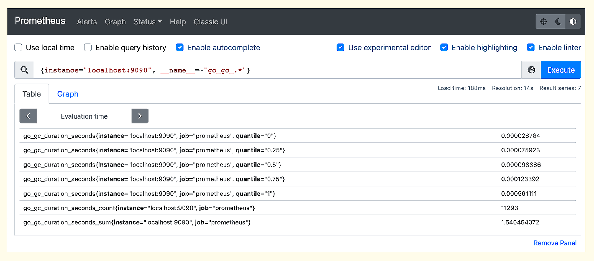
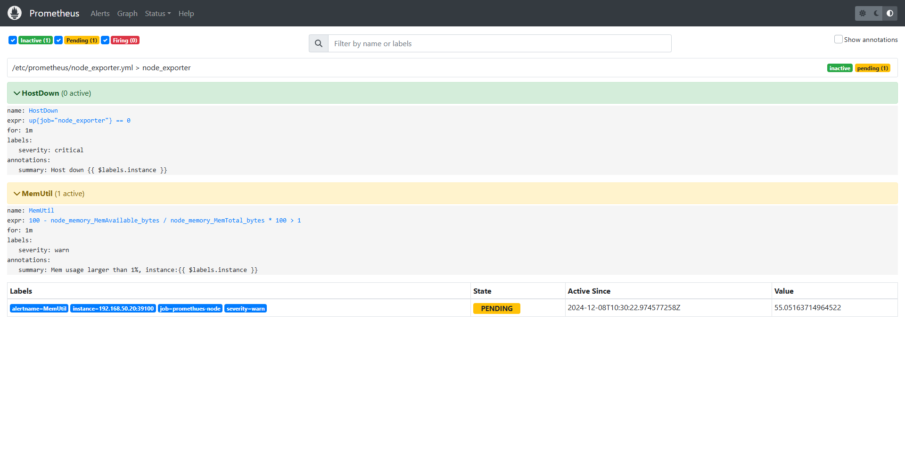

部署 Prometheus Server
安装简介：
- Prometheus 可以通过不同的方式安装部署prometheus监控环境，但是实际生产环境只需要根据实际需求选择其中一种方式部署即可，而且无论是使用哪一种方式安装部署的prometheus server，以后的使用都是一样的：
联网直接安装
使用apt或者yum安装
~# apt install prometheus
基于二进制文件安装
下载安装文件
因为生产环境大概率是Linux的，所以我们选择Linux下的发布包，把Prometheus 和 Alertmanager 两个包都下载下来。
注：Prometheus 的下载地址：https://prometheus.io/download
root@prometheus-server1:~# mkdir /apps
root@prometheus-server1:~# wget https://github.com/prometheus/prometheus/releases/download/v3.0.1/prometheus-3.0.1.linux-amd64.tar.gz
root@prometheus-server1:~# cd /apps/
root@prometheus-server1:~# tar xvf prometheus-3.0.1.linux-amd64.tar.gz
root@prometheus-server1:~# ln -sv /apps/prometheus-3.0.1.linux-amd64 /apps/prometheus
'/apps/prometheus' -> '/apps/prometheus-3.0.1.linux-amd64'
root@prometheus-server1:~# cd /apps/prometheus
root@prometheus-server1:~# ll
total 196072
drwxr-xr-x 2 3434 3434 38 Feb 12 04:58 console_libraries
drwxr-xr-x 2 3434 3434 173 Feb 12 04:58 consoles
-rw-r--r-- 1 3434 3434 11357 Feb 12 04:58 LICENSE
-rw-r--r-- 1 3434 3434 3773 Feb 12 04:58 NOTICE
-rwxr-xr-x 1 3434 3434 104427627 Feb 12 04:51 prometheus #prometheus服务可执行程序
-rw-r--r-- 1 3434 3434 934 Feb 12 04:58 prometheus.yml #prometheus配置文件
-rwxr-xr-x 1 3434 3434 96322328 Feb 12 04:54 promtool #测试工具，用于检测配置prometheus配置文件、检测metrics数据等
# ./promtool check config prometheus.yml
Checking prometheus.yml
SUCCESS: prometheus.yml is valid prometheus config file syntax
创建 service 启动文件
root@prometheus-server1:~# cat <<EOF >/etc/systemd/system/prometheus.service
[Unit]
Description=Prometheus Server
Documentation=https://prometheus.io/docs/introduction/overview/
After=network.target
[Service]
Type=simple
WorkingDirectory=/apps/prometheus/
ExecStart=/apps/prometheus/prometheus --config.file=/apps/prometheus/prometheus.yml --storage.tsdb.path=/apps/prometheus/data --web.enable-lifecycle --enable-feature=remote-write-receiver --query.lookback-delta=2m --web.enable-admin-api
Restart=on-failure
SuccessExitStatus=0
LimitNOFILE=65536
StandardOutput=syslog
StandardError=syslog
SyslogIdentifier=prometheus
[Install]
WantedBy=multi-user.target
EOF
root@prometheus-server1:~# systemctl daemon-reload && systemctl restart prometheus && systemctl enable prometheus.service
root@prometheus-server1:~# systemctl status prometheus
基于 docker
基于docker镜像直接启动或通过docker-compose编排
https://prometheus.io/docs/prometheus/latest/installation
# 官网
docker run \
-p 9090:9090 \
-v /path/to/prometheus.yml:/etc/prometheus/prometheus.yml \
prom/prometheus
# 修改某些配置
docker run -d -p 9090:9090 -v /apps/prometheus/:/etc/prometheus/ quay.io/prometheus/prometheus --config.file=/etc/prometheus/prometheus.yml --web.enable-lifecycle
# 热更新配置
curl -X POST http://localhost:9090/-/reload
# 日志显示以下内容即表示配置文件热加载成功：
... msg="Loading configuration file" filename=prometheus.yml ...
基于operator部署在kubernetes环境部署
https://github.com/prometheus-operator/kube-prometheus
Prometheus 进程的启动参数
这里需要重点关注的是 Prometheus 进程的启动参数，我在每个参数下面都做出了解释，你可以看一下。
# 指定配置文件
--config.file=/apps/prometheus/prometheus.yml
# 指定 Prometheus 时序数据的硬盘存储路径
--storage.tsdb.path=/apps/prometheus/data
# 启用生命周期管理相关的 API，比如调用 /-/reload 接口就需要启用该项
--web.enable-lifecycle
# 启用 remote write 接收数据的接口，启用该项之后，categraf、grafana-agent 等 agent 就可以通过 /api/v1/write 接口推送数据给 Prometheus
--enable-feature=remote-write-receiver
# 即时查询在查询当前最新值的时候，只要发现这个参数指定的时间段内有数据，就取最新的那个点返回，这个时间段内没数据，就不返回了
--query.lookback-delta=2m
# 启用管理性 API，比如删除时间序列数据的 /api/v1/admin/tsdb/delete_series 接口
--web.enable-admin-api
# 指定监听地址
--web.listen-address="0.0.0.0:9090"
# 指定chunk大小，默认512MB
--storage.tsdb.retention.size=B, KB, MB, GB, TB, PB, EB
# 数据保存时长，默认15天
--storage.tsdb.retention.time=
# 最大查询超时时间
--query.timeout=2m
# 最大查询并发数
-query.max-concurrency=20
# 最大空闲超时时间
--web.read-timeout=5m
#最大并发连接数
--web.max-connections=512
如果正常启动，Prometheus 默认会在 9090 端口监听，访问这个端口就可以看到 Prometheus 的 Web 页面，输入下面的 PromQL 可以查到一些监控数据。

这个数据是从哪里来的呢？其实是 Prometheus 自己抓取自己的，Prometheus 会在 /metrics 接口暴露监控数据，你可以访问这个接口看一下输出。同时Prometheus在配置文件里配置了抓取规则，打开 prometheus.yml 就可以看到了。
scrape_configs:
- job_name: 'prometheus'
static_configs:
- targets: ['localhost:9090']
localhost:9090是暴露监控数据的地址，没有指定接口路径，默认使用 /metrics，没有指定 scheme，默认使用 HTTP，所以实际请求的是 http://localhost:9090/metrics。
配置告警规则
Prometheus 进程内置了告警判断引擎，prometheus.yml 中可以指定告警规则配置文件，默认配置中有个例子。
rule_files:
# - "first_rules.yml"
# - "second_rules.yml"
我们可以把不同类型的告警规则拆分到不同的配置文件中，然后在 prometheus.yml 中引用。比如 Node-Exporter 相关的规则，我们命名为 node_exporter.yml，最终这个rule_files就变成了如下配置。
rule_files:
- "node_exporter.yml"
我设计了一个例子，监控 Node-Exporter 挂掉以及内存使用率超过1%这两种情况。这里我故意设置了一个很小的阈值，确保能够触发告警。
groups:
- name: node_exporter
rules:
- alert: HostDown
expr: up{job="node_exporter"} == 0
for: 1m
labels:
severity: critical
annotations:
summary: Host down {{ $labels.instance }}
- alert: MemUtil
expr: 100 - node_memory_MemAvailable_bytes / node_memory_MemTotal_bytes * 100 > 1
for: 1m
labels:
severity: warn
annotations:
summary: Mem usage larger than 1%, instance:{{ $labels.instance }}
最后，给 Prometheus 进程发个 HUP 信号，让它重新加载配置文件。
kill -HUP `pidof prometheus`
之后，我们就可以去 Prometheus 的 Web 上（Alerts菜单）查看告警规则的判定结果了。

我们从图中可以看出，告警分成3个状态，Inactive、Pending、Firing。HostDown这个规则当前是Inactive状态，表示没有触发相关的告警事件，MemUtil这个规则触发了一个事件，处于Firing状态。那什么是Pending状态呢？触发过阈值但是还没有满足持续时长（ for 关键字后面指定的时间段）的要求，就是Pending状态。比如 for 1m，就表示触发阈值的时间持续1分钟才算满足条件，如果规则判定执行频率是10秒，就相当于连续6次都触发阈值才可以。